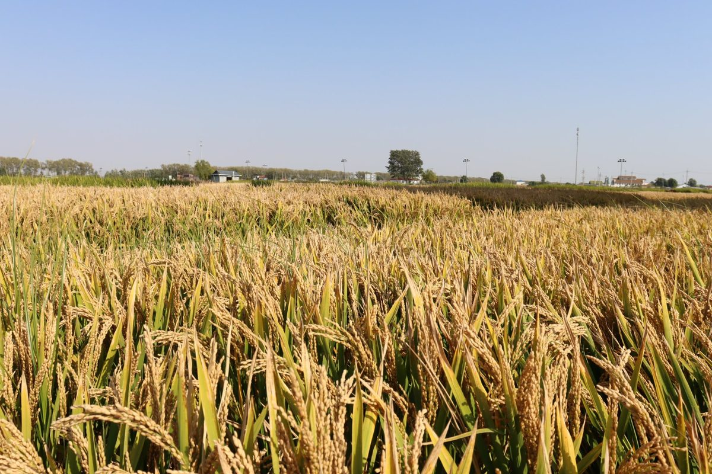
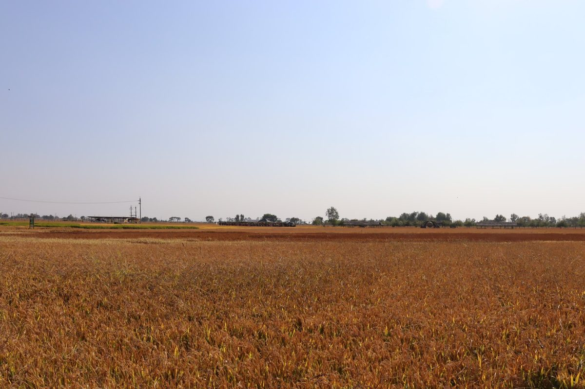
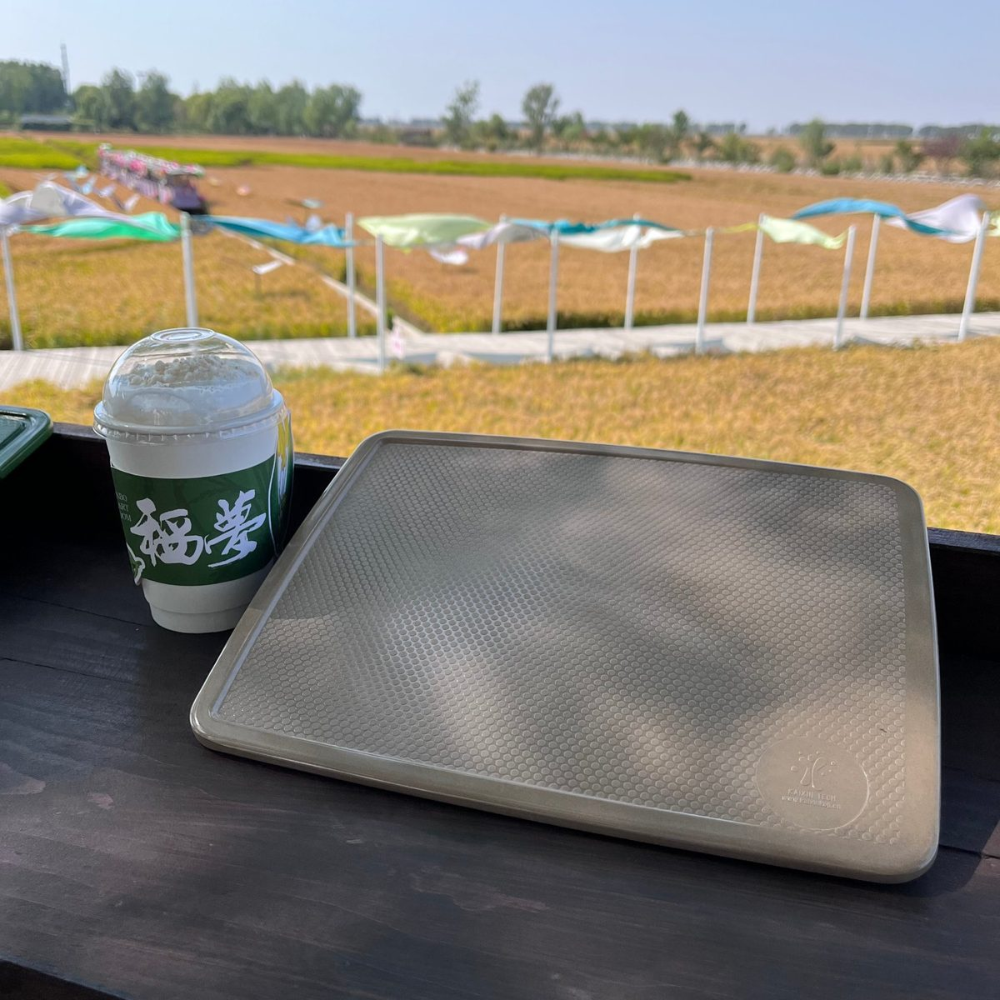
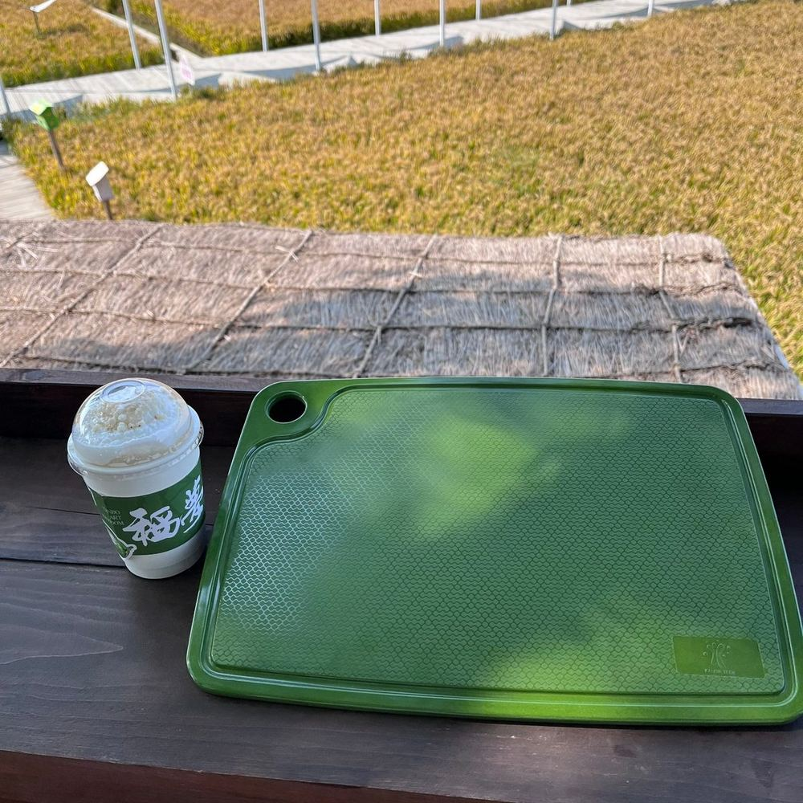
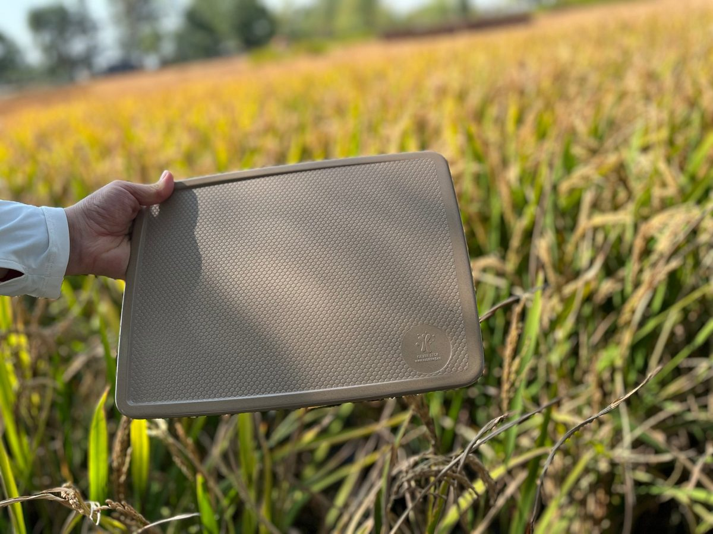

Christmas Stocking Guide: The Tableware Order Window Is Closing — What Importers Should Do Now
Walk past a rice field in Liaoning this week and you'll see the story of your Q4 supply chain: golden stalks ready to cut, and — days later — stubble fields with the season's husk feedstock collected. That harvest clock runs in parallel with your Christmas clock, and right now both are ticking. Whether you're a distributor filling retail shelves, a café group planning holiday table settings, or a brand building private-label gift sets, this guide walks through the Christmas stocking math for rice husk tableware: transit timelines, the Chinese New Year slowdown nobody budgets for, what actually sells in the holiday season — and what to do this week if your plans slipped.

Rice fields in our sourcing region, October 2026 — harvest week is also order-confirmation week for holiday programs.
The Clock Nobody Argues With: Ocean Transit Math
Christmas stock doesn't miss the season because factories are slow — it misses because the calendar between order and shelf is longer than most buyers plan for. Here's the honest math for a made-to-order, custom-logo program:
| Stage | Typical duration |
|---|---|
| Sample confirmation + artwork for OEM orders | 7–14 days |
| Production (full container, custom color/logo) | 30–40 days |
| Ocean freight — to US West Coast | ~15–20 days port to port |
| Ocean freight — to US East Coast / Northern Europe | ~30–38 days port to port |
| Customs, inland haulage, receiving | 5–10 days |
Ranges, not promises — confirm current vessel schedules with your forwarder before committing a shelf date.
Run the addition yourself: a European importer confirming an order in mid-October is looking at arrival in mid-to-late December — past most retail cutoff dates for Christmas-day sales, but squarely in time for New Year's Eve, January hospitality traffic and Q1 restocking. A US West Coast importer confirming this week can still make a late-December arrival. That's the reality of the window, and it's why the right question in October isn't only "can I still get Christmas stock?" — it's "what should my order cover instead?"
Why October Orders Age Well: The CNY Slowdown
Even buyers who have written off Christmas often wait until December "to see how the season goes" — and that's the mistake. Chinese factories wind down for Chinese New Year (early February in 2027), and the two to three weeks around it are effectively closed; capacity before the holiday is booked by every importer rushing the same idea. An order confirmed in October gets production slots with normal lead times and calm communication. The same order placed in January competes with the entire post-holiday restock wave. Our earlier container loading and MOQ guide covers how to plan volumes around container economics — pairing that with an October order date is the single cheapest supply-chain advantage you can give yourself.
Fresh Harvest, Fresh Feedstock: A Quiet Quality Argument
There's a less obvious reason October matters for rice husk tableware specifically: the raw material. Rice husk is an agricultural byproduct, and this week's harvest across Northeast China is literally the feedstock that will mold your 2027 production. Husk collected this season is clean, dry and abundant; deep-in-the-year programs draw down from stored stock. We walked our local fields during harvest — the same material story we told in from rice harvest to table — and it's the kind of provenance detail that retail buyers increasingly ask for on shelf tags and product pages.

Post-harvest fields near our facility — the husk from this season's crop becomes next season's tableware.
What Actually Sells in the Holiday Season
Across our B2B customers, the Q4 winners are consistent year over year:
🍲 Giftable serving pieces for retail. Serving trays and board-style pieces photograph beautifully in holiday packaging and price well as gift sets. Our rice husk serving trays are a recurring holiday-set anchor — lightweight, shatter-resistant and easy to private-label.
🔪 Kitchen-season workhorses. From Thanksgiving through New Year's Eve, home cooks run their kitchens hardest. The rice husk chopping board sells as both a utility piece and a gift, and the green colorway is a natural fit for festive ranges.
☕ Hospitality refresh kits. Cafés and catering operators refresh table settings before the holiday rush — cups, bowls and compartment plates in seasonal colorways, ordered as mixed-container programs.

The rice husk serving tray in its own landscape — the provenance shot retail gift packaging is built around.

The green chopping board — a colorway that slides straight into festive merchandising.
If the Christmas Window Missed: Three Moves That Still Work
🚢 Split the program. Ship a stock-SKU portion by sea now (arrives January) and negotiate air or rail freight for a small hero-SKU quantity if a specific shelf date is non-negotiable. Rail to Europe sits between ocean and air on both cost and speed.
🎯 Pivot the calendar. An order confirmed now lands in time for New Year's Eve hospitality, January "fresh start" retail (meal-prep and kids' sets do well), and — for Southern Hemisphere customers — the long summer outdoor season. Our Australian summer BBQ stocking guide breaks down that opposite-season opportunity.
📦 Order against CNY, not Christmas. The most valuable January inventory is the kind that's already on the water when factories close. October orders beat the rush; December orders feed it.

Product in the field it came from — provenance your retail buyers can put on a shelf tag.
OEM Checklist: What to Prepare This Week
✅ Confirm SKUs and mixed-container quantities (see our MOQ guide for container math)
✅ Send logo artwork and confirm colorway — custom colors need sign-off before tooling
✅ Decide packaging: gift boxes, sleeve design, barcodes for retail
✅ Ask for current food-contact documentation — our products are SGS tested, reports available on request
✅ Get a vessel schedule from your forwarder and work backward from your real shelf date
✅ Lock the production slot before CNY-season capacity tightens
Frequently Asked Questions
Is it too late to order tableware for Christmas?
For Christmas-day retail on the US East Coast and in Europe, made-to-order production plus ocean freight makes a late-December arrival unrealistic — the window for that closed around late September. US West Coast buyers confirming this week can still make a December arrival. But New Year's, January retail and Southern Hemisphere summer are all still reachable, and those programs are worth having anyway.
How far in advance should I order before Chinese New Year?
Confirm orders by early-to-mid November at the latest for production completion before the CNY wind-down (factories effectively close for 2–3 weeks around the holiday in early February 2027). October confirmations get the widest choice of production slots — and for rice husk products specifically, this season's fresh husk feedstock.
What eco tableware sells best as Christmas gifts?
Serving trays and chopping boards in gift packaging are the consistent retail winners — practical, photogenic and light to ship. Cup and bowl sets work well for café and hospitality refresh programs. All of our range supports custom logo and color for private-label gift sets.
Can I get custom colors and logos for a holiday range?
Yes — that's our core OEM/ODM business. Logo embossing or printing, custom colorways and retail packaging are all supported from our 5,000 m² facility. Build roughly 7–14 days into your timeline for sample and artwork confirmation before production starts.
Planning a holiday or Q1 program?
Send us your SKU list and target arrival date. We'll come back with a production schedule, per-SKU packing data, our SGS food-contact reports and a quotation with custom logo and color options — so you can lock a vessel before the calendar locks it for you.
Send InquiryPublished by Kaixin Eco Team · Shenyang Kaixin Technology Co., Ltd. — eco-friendly rice husk (plant fiber) dinnerware manufacturer since 2016, shipping to 40+ countries with full OEM/ODM support. Keep planning: browse the full product range, read more stocking guides on the blog, or start from the Kaixin eco tableware homepage.